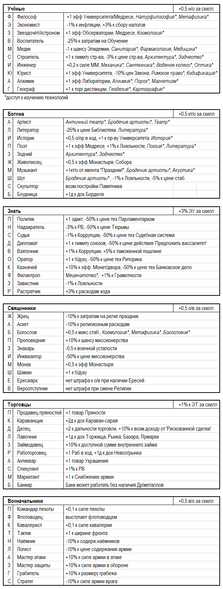

3. Персонажи
В игре представлены следующие персонажи: правители стран (вожди, монархи, главы государств-республик), их дети, советники, военные деятели, учёные, деятели культуры, философы, торговцы.
Все персонажи имеют два показателя – скилл (ценность), обозначаемый цифрой в диапазоне от 1 до 6 (чем выше, тем ценней) и персональные характеристики (черты характера, перки), обозначаемые буквой.
Скилл – величина, заданная с рождения, изменяется в ходе игры по случайным событиям. Скилл имеет два проявления: первый показатель – военные навыки правителя (влияют на эфф-сть командования армией), второй – административные (повышают ЭУ в стране).
Скилл может изменяться в ходе жизни персонажа за счёт ивентов и как следствие заключения удачного дин.брака. Военный скилл правителя может расти от удачно проведенных сражений. Кроме того, решением «Дать образование» можно повысить скилл ребёнка-наследника, а решением «дать новую должность» - повысить скилл советника-Знати.
3.1. Персональные характеристики
Персонажи имеют различные персональные характеристики (перки).
Перки правителей:

Перки могут дополняться и меняться по случайным событиям.
Перки советников:
3.2. Появление персонажей
Персонажи появляются в результате случайных событий (рождение детей) или действий игрока (поступление на гос.службу). Игрок может выбрать - нанимать ли персонажа к себе на службу или нет. Новые возможные советники появляются в предбалансе — игрок в заявке на ход определяет, принимает ли он данного персонажа на службу или нет.
Игрок может увольнять персонажей, заменяя их на других. Командиров и Знать можно иметь не более 3-х, членов семьи (включая правителя) – не более 4, остальные персонажи – не более 1 каждой роли.
Обычно персонажи исполняют свои роли до наступления смерти. Если в балансе напротив записи о персонаже появляется надпись «Умер», то это означает, что в текущий ход его уже нет, эффекты, которые влечет данный персонаж не будут доступны в данный ход. Баланс по итогам хода уже не будет содержать запись о данном персонаже.
Игроки могут передавать при взаимном согласии персонажей из страны в страну одной культурной группы. Передать персонажа можно при том условии, что он был нанят игроком (т.е. хотя бы 1 ход принадлежал ему). За 1 ход можно передать/принять не более 1 персонажа (персонаж может перейти в другую страну 1 раз за свою жизнь). Изгонять принятую на службу Знать и передавать её др. странам нельзя.
В ход престолонаследия оставшиеся дети мужского пола предыдущего правителя при условии достижения ими 20-ти летнего возраста и наличии свободной ячейки для Знати, могут решением игрока переводиться в Знать.
3.3. Брак
Правители и члены семей других стран могут заключать браки для продолжения своих династий.
Браки делятся на династические (с представителями правящих домов других стран) и браки с представителями местной знати. Брак возможен с 20-ти летнего возраста.
Брак с представителями местной знати возможен всегда, если правитель не женат. Такой брак снижает скилл правителя на -1, так как он не смог найти "более достойного себя варианта".
Династический брак – брак с представителем другого гос-ва. Он не снижает скилл правителя (а иногда его увеличивает). Династический брак может быть заключен между странами либо одной религии, либо одной культурной группы (т.е. например между двумя странами Севера, даже если одна страна – православная, а вторая - католик).
При таком браке у обоих стран вносится соответствующая запись в акты дипломатических состояний. Запись о дин.браке сохраняется в балансе 5 ходов с момента его заключения. Персонаж женского пола, участвующий в таком браке исключается из баланса, а персонаж мужского пола получает запись, подтверждающую его брак.
Игроки самостоятельно договариваются об имущественной стороне брачного договора (кто и в каком размере получает приданое по такому браку, если приданное имеет место).
При заключении династического брака жених может взять один из перков, которыми владеет его жена. Если при заключении династического брака скилл невесты (военный скилл сравнивается с военным скиллом жениха, административный – с управленческим) выше скилла жениха, то Правитель может получить на выбор, либо +1 к своему уровню, либо перк жены. В обоих случаях об указанных последствиях брака игроки сообщают в своих заявках на ход.
Династический брак может способствовать генерации о/пр (если страна более низкого ранга заключает дин.брак со страной более высокого ранга) или снижать их прирост (при обратном соотношении рангов стран).
3.4. Дети
Дети появляются только у правителей страны (другие члены семьи, даже будучи в браке, детей де-факто не имеют).
В ход может появиться не более 1 ребенка. Общее число детей от брака не может превышать 3.
Пол будущего ребенка, его имя, перк и скилл определяется также случайным способом.
Фертильный возраст персонажей: 20 – 60 лет.
3.5. Смерть правителя и наследование трона
В случае, если в балансе на начало хода игрок напротив записи о правителе видит слово «Умер!» это означает, что в этот ход произошла смерть правителя. Игроку в заявке на данный ход следует назначить наследника.
При этом соблюдаются следующие правила:
1) Если к моменту смерти текущего правителя имелось несколько наследников, то престол переходит к старшему наследнику мужского пола. Передача трона другому наследнику влечет снижение стабильности на -0,5. Другие сыновья умершего правителя исключаются из баланса.
2) Наследование трона персонажем женского пола (дочерью) допускается только в том случае, когда нет прямых наследников мужского пола. Страна в этом случае получает штраф к стабильности -0,5 стаб.
3) Если ни один из вышеуказанных сценариев престолонаследия не проходит, то происходит смена правящей династии. Власть переходит к случайному персонажу, отраженному в балансе страны.
3.6. Выборы
В странах с республиканской ФП смена правителя осуществляется каждые 5 ходов или раньше, если предыдущий правитель умирает. В качестве альтернативного кандидата игроку предоставляется рандомный персонаж. Игрок может выбрать новым правителем или данного рандомного персонажа или назначить новым выборным правителем старого правителя, либо его совершеннолетнего сына.
Выборы Императора СРИ и Папы Римского осуществляются в особом порядке – путем голосования стран, входящих в СРИ и стран-католиков в соответствии с данными о количестве голосов, которыми они обладают.
3.7. Местонахождение персонажей
Персонажи, возглавляющие армии, находятся в месте расположения соответствующих вооруженных сил, члены его семьи и советники - в столице страны.
Закреплять Командира от одной армии в другую можно при нахождении обоих армий в одной локации.